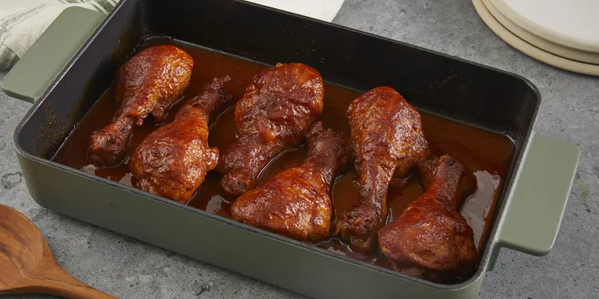

BBQ Chicken
Did you know it's possible to make tender, juicy baked BBQ chicken legs at home? These drumsticks are coated in a barbecue sauce and baked in the oven for the perfect crispy skin (that doesn't require a deep fryer or grill).

Ingredients
- 6 chicken drumsticks
- ⅓ cup ketchup
- ⅓ cup white vinegar
- ½ cup water, or more to taste (Optional)
- ¼ cup brown sugar
- 4 teaspoons butter, cut into small chunks
- 1 teaspoon salt, or to taste
- 2 teaspoons Worcestershire sauce, or to taste
- 2 teaspoons dry mustard